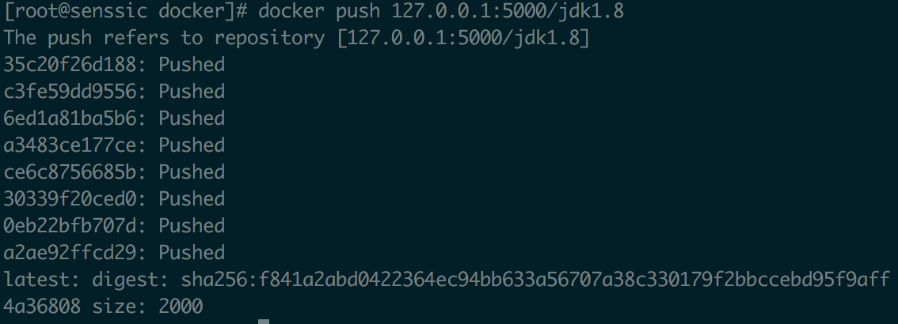
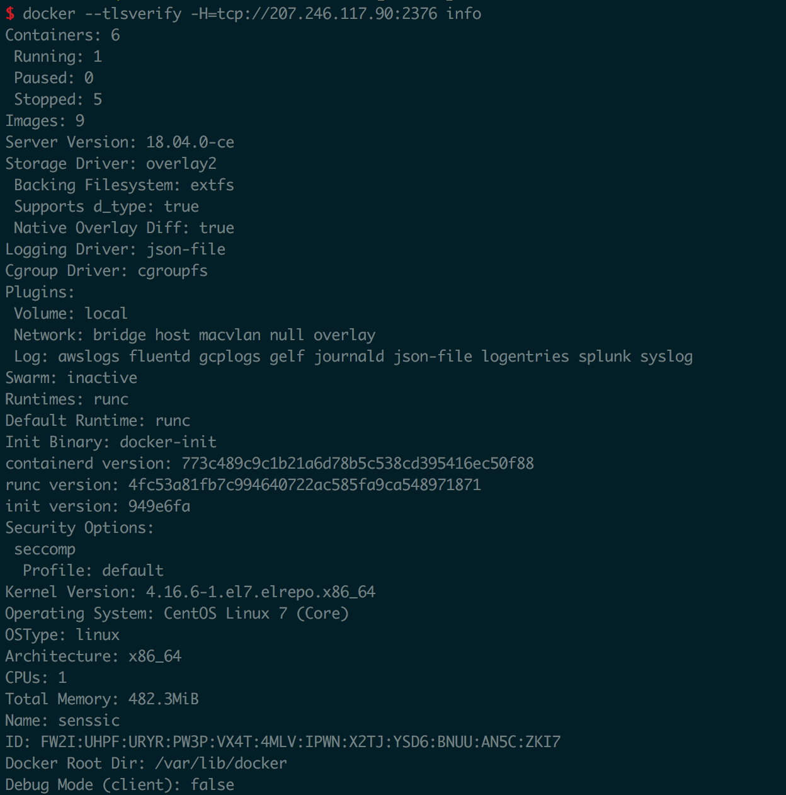

搭建docker私有仓库
创建私有仓库
拉取仓库镜像
docker pull registry
启动仓库镜像
docker run ‐di ‐‐name=registry ‐p 5000:5000 registry
修改daemon.json,让docker信任私有仓库地址
vi /etc/docker/daemon.json
添加
{"insecure‐registries":["127.0.0.1:5000"]}重启docker服务
systemctl restart docker
镜像上传到私有仓库
为了验证私有仓库搭建以及能正常上传到私有仓库,新建tag并尝试push镜像
标记此镜像为私有仓库的镜像
docker tag java:8 127.0.0.1:5000/jdk1.8
注意:java:8为本身已经存在的镜像
再次启动私服容器
docker start registry
上传标记的镜像
docker push 127.0.0.1:5000/jdk1.8

从私有仓库拉取
pull的时候记得带”主机IP:5000”,不然还是去Docker hub上下载而不是私有仓库下载
docker pull 127.0.0.1:5000/xxx/xxx
docker的maven插件使用
生成TLS认证远程访问 Docker
需要生成三种证书类型:
- CA 证书用来生成客户端和服务端证书
- 远端Docker使用的客户端生疏
- 服务端使用的Docker daemon证书
服务端配置
1 | # 生成 CA 私钥 |
把 ca.pem server-cert.pem server-key.pem 三个文件移动到 /etc/docker/ 文件夹中。
在远端配置Docker
配置/etc/docker/daemon.json文件如下,注意,镜像地址与本文无关,可不配置
1 | "insecure-registries":["127.0.0.1:5000"], |
CoreOS 官方文档的方法
首先需要修改 /etc/systemd/system/docker-tcp.socket 文件内容
1 | ListenStream=2375 |
重新启动服务器
1 | $ sudo systemctl daemon-reload |
将 ca.pem cert.pem key.pem下载到客户端,放置到~/.docker目录下
运行测试命令
docker –tlsverify -H=tcp://207.246.117.90:2376 info

Maven插件自动部署步
1 | <plugin> |
可以看到执行成功
1 | Step 1/3 : FROM java:8 |
参考：